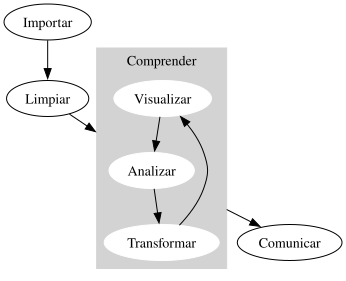

El juego completo
Nuestro objetivo en esta parte del libro es darte un panorama rápido de las principales herramientas de la ciencia de datos: importar, limpiar, transformar y visualizar datos, como se muestra en la figura de abajo. Queremos mostrarte el “juego completo” de la ciencia de datos, dándote lo justo de cada una de las piezas principales para que puedas abordar datasets reales, aunque sencillos. Las partes posteriores del libro tratarán cada uno de estos temas con más profundidad, ampliando la variedad de desafíos de ciencia de datos que podrás abordar.
Después de este capítulo, hay cuatro capítulos principales que se centran en las herramientas de la ciencia de datos:
- La visualización es un gran punto de partida para programar en Python porque la recompensa es muy clara: puedes crear gráficos elegantes e informativos que te ayudan a entender los datos. En Visualización de datos, te sumergirás en la visualización, aprenderás la estructura básica de un gráfico y técnicas potentes para convertir datos en gráficos.
- La visualización por sí sola no suele ser suficiente, así que en Transformación de datos aprenderás los verbos clave que te permiten seleccionar variables importantes, filtrar observaciones clave, crear nuevas variables y calcular resúmenes.
- En Tidy data, aprenderás a limpiar datos y, en concreto, sobre los datos “tidy”, una forma coherente de almacenar datos tabulares que facilita la transformación, la visualización y el modelado. Aprenderás los principios subyacentes y cómo llevar tus datos a un formato “tidy”.
- Antes de poder transformar y visualizar tus datos, primero necesitas cargarlos en una sesión de Python. En Importación de datos aprenderás los conceptos básicos para cargar archivos .csv en tu sesión de Python.
Estos se intercalan con otros cuatro capítulos que se centran en tu flujo de trabajo con Python:
- En Flujo de trabajo: conceptos básicos, Flujo de trabajo: estilo y Flujo de trabajo: escribir código, aprenderás buenas prácticas de flujo de trabajo para escribir y organizar tu código.
- En Flujo de trabajo: paquetes y entornos, aprenderás más sobre los paquetes y sobre cómo aislar tus proyectos en entornos de código separados.
Por último, Epílogo: cómo obtener más ayuda contiene algunos consejos breves sobre cómo obtener ayuda y seguir aprendiendo.